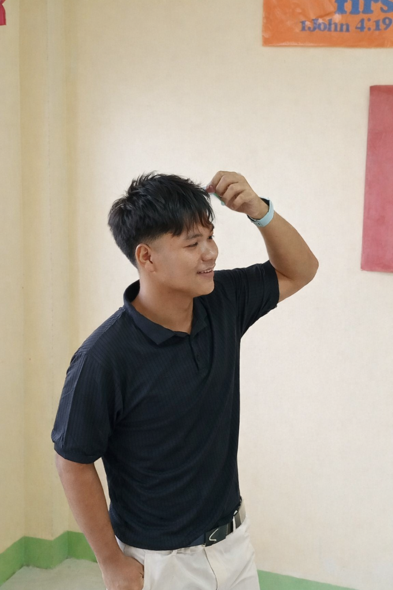

My Goals
Improve my programming and web development skills, create useful projects, and keep growing in the technology field.
I’m an Information Technology student who enjoys learning how technology works, solving problems, and building my skills one project at a time.

I believe that progress comes from curiosity, practice, and being willing to learn from mistakes. I’m working toward becoming a capable IT professional and creating useful digital experiences.
Improve my programming and web development skills, create useful projects, and keep growing in the technology field.
I am inspired by my family and the people who believe in me. They motivate me to keep learning, work hard, and never give up on my dreams of becoming a successful programmer.
I come from a family of four, with my mother, father, and one sibling. My parents are very supportive of me and always encourage me to do my best in my studies and achieve my goals. They teach me the importance of respect, hard work, and responsibility. Their love and support motivate me to keep learning and work toward a better future.
My hobbies are playing online games, learning programming, and exploring new things about technology. I also enjoy solving problems and learning new skills that can help me improve my knowledge and creativity.
I am interested in computers, programming, and technology. I enjoy learning how software works, exploring new technologies, and improving my problem-solving skills. I also want to learn more about web development and how to create useful applications.
To develop my knowledge and practical skills in Information Technology, especially programming, web development, and computer troubleshooting. I aim to become a responsible and adaptable professional who uses technology to solve problems, continues learning, and contributes positively to a team or organization.
My educational journey has helped me develop my knowledge and skills in business and information technology. I continue to learn and improve myself as I work toward my future career.
University of Eastern Pangasinan
Studying computing fundamentals, programming, information systems, and web development.
[2026 – Present]Cabilaoan Agro-Industrial High School
Built foundational knowledge in business, communication, teamwork, and financial concepts.
2024 - 2026Cabilaoan Agro-Industrial High School
Developed academic foundations, collaboration, and personal responsibility.
2020 - 2024Lebueg Elementary School
Built the foundation for lifelong learning and personal development.
2014 - 2020My experiences help me develop useful skills, learn new things, and become more responsible. I continue to improve myself and prepare for future career opportunities.
Construction / Labor Support
Assisted with construction tasks, prepared materials, maintained a clean work area, and followed safety instructions while working with others.
Academic Support
Helped learners understand mathematical concepts by explaining procedures, guiding practice problems, and encouraging step-by-step problem solving.
Mobile Device Support
Assisted with checking phone issues, basic troubleshooting, device setup, and identifying possible solutions.
I am continuously improving my technical skills through practice, learning, and personal projects.
Showcasing my certifications, skills, and continuous learning.
Elementary education completion
Open certificate ↗ DIPLOMAHigh school graduation
Open certificate ↗ CERTIFICATEWork immersion completion
Open certificate ↗ TRAININGFinancial literacy training certificate
Open certificate ↗ TRAININGCitizenship Training Program certificate
Open certificate ↗Explore my awards and achievements.
Recognition for mathematics achievement
Open award image ↗ RECOGNITIONRecognition for good citizenship
Open award image ↗ LEADERSHIPRecognition for leadership and service
Open award image ↗ ACHIEVEMENTRecognition for the successful completion of two projects as a Campus Integrity Crusader, promoting a culture of integrity.
Open award image ↗ COMPETITIONRecognition for Rubik’s Cube competition
Open award image ↗Feel free to reach out through email or social media to connect, share ideas, and explore opportunities.
I’m open to learning with others, sharing ideas, and exploring opportunities in technology.
Send an Email ↗